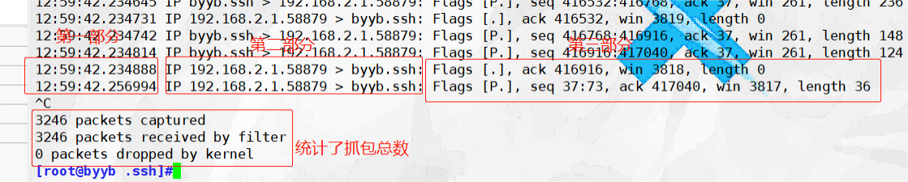
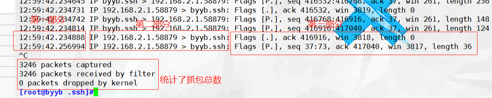
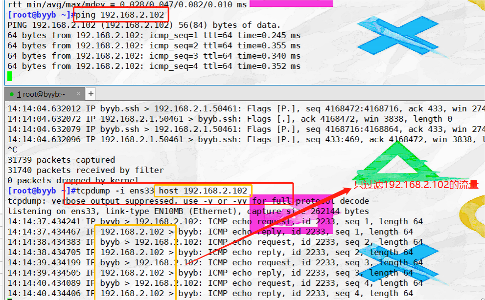
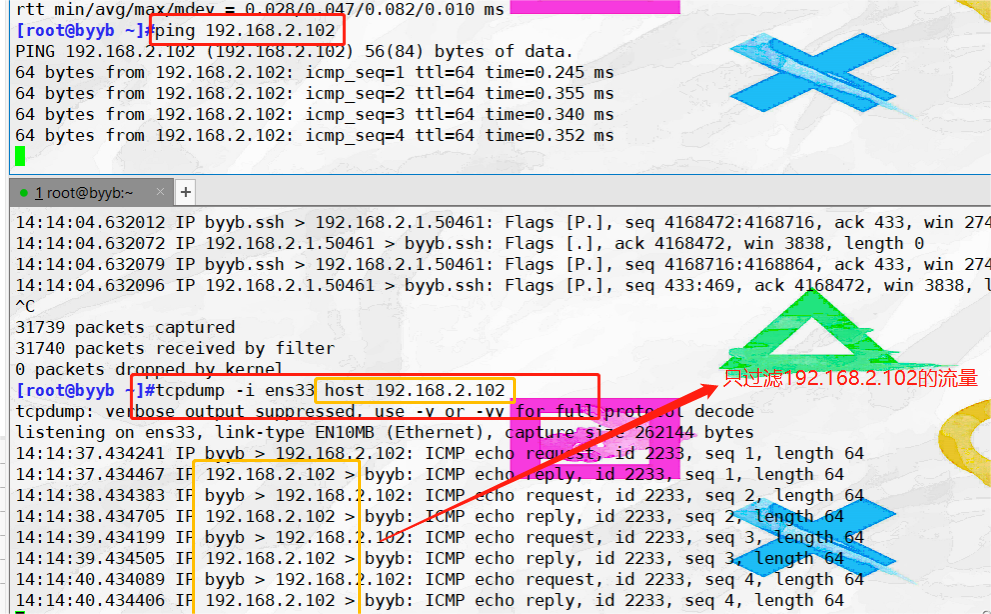
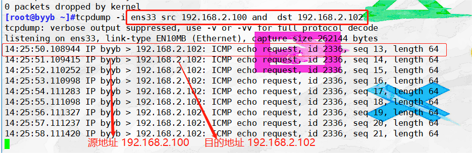
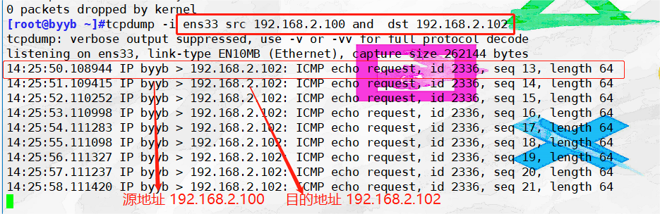

明明
啊啊啊啊啊啊啊
白白
咋啦
明明
啥是tcpdump？我都没听说过！快给我讲讲！白白
一个抓包工具而已...
明明
...那 ！你 ! 倒 ! 是 ! 继 ！续 ！ 讲 ! 啊！

白白
大娘，别打，别打，我讲..
tcpdump是一个抓包工具，用于实时捕获和分析网络流量。它通常在Unix和类Unix操作系统上可用，包括Linux。
tcpdump能够捕获流经网络接口的数据包，并显示或保存它们以供进一步分析。它提供有关每个数据包的详细信息，包括源IP地址、目标IP地址、使用的协议、数据包时间戳、数据包大小等等。
tcpdump通过使用各种过滤器，以捕获特定类型的流量，例如仅捕获特定IP地址、端口或协议的数据包。
tcpdump能够捕获流经网络接口的数据包，并显示或保存它们以供进一步分析。它提供有关每个数据包的详细信息，包括源IP地址、目标IP地址、使用的协议、数据包时间戳、数据包大小等等。
tcpdump通过使用各种过滤器，以捕获特定类型的流量，例如仅捕获特定IP地址、端口或协议的数据包。
那你知道为什么我们会用到tcpdump吗？
明明
你说呢？（手握利刃）
白白
嘿嘿，您别冲动，下面就是它的用处：调试和故障排查：通过捕获和查看实时的网络数据包流量，来观察和分析数据包，找到故障所在；
网络流量分析：通过捕获网络数据包，分析数据包的详细信息，来理解网络通信模式、检测潜在安全问题或优化网络性能。
安全监测和入侵检测：捕获和分析数据包，来检查网络中的异常流量、恶意软件传播、潜在的攻击尝试等；
协议分析和开发：Tcpdump提供了深入了解网络协议工作原理和通信模式的机会。
tcpdump在哪里？
首先，安装tcpdump，或者更新版本
yum install -y tcpdump
查看详细信息
rpm -qc tcpdump
查看目录
which tcpdump
首先，安装tcpdump，或者更新版本
yum install -y tcpdump
查看详细信息
rpm -qc tcpdump
查看目录
which tcpdump
明明
这还差不多，那我问你：我该怎么用tcpdump？
.jpg)
白白
1.命令格式#命令格式
tcpdump option proto dir type
选项 协议 数据的方向 抓取的数据类型
##proto（协议）##
1. tcp udp icmp
2. ip ipv6
3. arp
##dir（方向）##
1. src
2. dst
3. src and dst
#type（类型）##
1. host 主机
2. net 网段
3. port 端口
4. port range 端口范围
tcpdump [-adeflnNOpqStvx][-c<数据包数目>][-dd][-ddd][-F<表达文件>][-i<网络界面>][-r<数据包文件>][-s<数据包大小>][-tt][-T<数据包类型>][-vv][-w<数据包文件>][输出数据栏位]
#选项（option）#
-a 尝试将网络和广播地址转换成名称。
-c<数据包数目> 收到指定的数据包数目后，就停止进行倾倒操作。
-d 把编译过的数据包编码转换成可阅读的格式，并倾倒到标准输出。
-dd 把编译过的数据包编码转换成C语言的格式，并倾倒到标准输出。
-ddd 把编译过的数据包编码转换成十进制数字的格式，并倾倒到标准输出。
-e 在每列倾倒资料上显示连接层级的文件头。
-f 用数字显示网际网络地址。
-F<表达文件> 指定内含表达方式的文件。
-i<网络接口> 使用指定的网络截面送出数据包。
-l 使用标准输出列的缓冲区。
-n 不把主机的网络地址转换成名字。
-N 不列出域名。
-O 不将数据包编码最佳化。
-p 不让网络界面进入混杂模式。
-q 快速输出，仅列出少数的传输协议信息。
-r<数据包文件> 从指定的文件读取数据包数据。
-s<数据包大小> 设置每个数据包的大小。
-S 用绝对而非相对数值列出TCP关联数。
-t 在每列倾倒资料上不显示时间戳记。
-tt 在每列倾倒资料上显示未经格式化的时间戳记。
-T<数据包类型> 强制将表达方式所指定的数据包转译成设置的数据包类型。
-v 详细显示指令执行过程。
-vv 更详细显示指令执行过程。
-x 用十六进制字码列出数据包资料。
-w<数据包文件> 把数据包数据写入指定的文件。
#选项（option）#
-a 尝试将网络和广播地址转换成名称。
-c<数据包数目> 收到指定的数据包数目后，就停止进行倾倒操作。
-d 把编译过的数据包编码转换成可阅读的格式，并倾倒到标准输出。
-dd 把编译过的数据包编码转换成C语言的格式，并倾倒到标准输出。
-ddd 把编译过的数据包编码转换成十进制数字的格式，并倾倒到标准输出。
-e 在每列倾倒资料上显示连接层级的文件头。
-f 用数字显示网际网络地址。
-F<表达文件> 指定内含表达方式的文件。
-i<网络接口> 使用指定的网络截面送出数据包。
-l 使用标准输出列的缓冲区。
-n 不把主机的网络地址转换成名字。
-N 不列出域名。
-O 不将数据包编码最佳化。
-p 不让网络界面进入混杂模式。
-q 快速输出，仅列出少数的传输协议信息。
-r<数据包文件> 从指定的文件读取数据包数据。
-s<数据包大小> 设置每个数据包的大小。
-S 用绝对而非相对数值列出TCP关联数。
-t 在每列倾倒资料上不显示时间戳记。
-tt 在每列倾倒资料上显示未经格式化的时间戳记。
-T<数据包类型> 强制将表达方式所指定的数据包转译成设置的数据包类型。
-v 详细显示指令执行过程。
-vv 更详细显示指令执行过程。
-x 用十六进制字码列出数据包资料。
-w<数据包文件> 把数据包数据写入指定的文件。
明明
这么多？
白白
不多也不少，懵逼不伤脑。下面讲常用选项，好好学！
1.对网络接口抓包 -i
 第一部分
12:59:42.256994
#数据包时间 时：分：秒.毫秒
第二部分
IP 192.168.2.1.58879 > byyb.ssh
#详解#
IP 192.168.2.1.58879
#发送方IP地址.端口号 ip地址：192.168.2.1 端口号：47496
# >表示数据流向
byyb.ssh
#主机名.协议 主机名：byyd 协议：ssh
第三部分
Flags [P.], seq 37:73, ack 417040, win 3817, length 36
#详解#
Flags [P.]: TCP 数据包的标志字段。"[P.]" 表示该数据包携带了数据（Push 标志），并且是由发送方发起的。
seq 37:73: 该数据包的序列号范围。这个范围从序列号 37 开始，到序列号 73 结束。
ack 417040: 确认号（ACK）。表示发送方期望接收到的下一个字节的序列号。
win 3817: 窗口大小（Window Size），表示接收方的可用缓冲区大小。
length 36: 该数据包的长度，单位为字节。
 第一部分
12:59:42.256994
#数据包时间 时：分：秒.毫秒
第二部分
IP 192.168.2.1.58879 > byyb.ssh
#详解#
IP 192.168.2.1.58879
#发送方IP地址.端口号 ip地址：192.168.2.1 端口号：47496
# >表示数据流向
byyb.ssh
#主机名.协议 主机名：byyd 协议：ssh
第三部分
Flags [P.], seq 37:73, ack 417040, win 3817, length 36
#详解#
Flags [P.]: TCP 数据包的标志字段。"[P.]" 表示该数据包携带了数据（Push 标志），并且是由发送方发起的。
seq 37:73: 该数据包的序列号范围。这个范围从序列号 37 开始，到序列号 73 结束。
ack 417040: 确认号（ACK）。表示发送方期望接收到的下一个字节的序列号。
win 3817: 窗口大小（Window Size），表示接收方的可用缓冲区大小。
length 36: 该数据包的长度，单位为字节。
2.指定收取数据包的数量 -c
tcpdump -i ens33 -c 2 #只抓两个数据包
tcpdump -i ens33 -c 2 #只抓两个数据包
3.不把ip转换成域名，直接显示ip -n
tcpdump -i ens33 -n #直接显示ip地址
tcpdump -i ens33 -n #直接显示ip地址
4.显示ip和端口号 -nn
tcpdump -i ens33 -nn
tcpdump -i ens33 -nn
5. 在每行的输出中，不显示时间 -t
tcpdump -i ens33 -t
再加一个t
tcpdump -i ens33 -tt #显示一个时间戳
再再加一个t
tcpdump -i ens33 -ttt #每行之间的时间间隔
tcpdump -i ens33 -t
再加一个t
tcpdump -i ens33 -tt #显示一个时间戳
再再加一个t
tcpdump -i ens33 -ttt #每行之间的时间间隔
明明
居然还有这种操作，那再来一个t呢？

白白
没了，那是不可能滴！还真有tcpdump -i ens33 -tttt #显示更详细的时间
6. 产生详细的输出 -v
tcpdump -i ens33 -v
#v越多，显示的信息越详细
tcpdump -i ens33 -vv
tcpdump -i ens33 -vvv
tcpdump -i ens33 -v
#v越多，显示的信息越详细
tcpdump -i ens33 -vv
tcpdump -i ens33 -vvv
7.指定数据包的大小 -s
tcpdump -i ens33 -s 50 #指定数据包的大小为50
tcpdump -i ens33 -s 50 #指定数据包的大小为50
8.显示所有可用的网络接口 -D
tcpdump -D
tcpdump -D
9.将捕获信息保存到文件中，且不分析核打印在屏幕上 -w
tcpdump -i any -w test.cap #将文件后缀改成cap 或者pcap形式可以直接用wireshark打开
tcpdump -i any -w test.cap #将文件后缀改成cap 或者pcap形式可以直接用wireshark打开
明明
啊啊终于讲完了，大脑要萎缩了
白白
谁说的，还有过滤规则呢。
1.基于ip地址/网段过滤
host选项
主机2 ping 主机1
[root@localhost data]#tcpdump -i ens33 host 192.168.91.102
#只过滤 和 192.168.91.100有关的流量

host选项
主机2 ping 主机1
[root@localhost data]#tcpdump -i ens33 host 192.168.91.102
#只过滤 和 192.168.91.100有关的流量

dst 选项 目的地址
src 选项 源地址
tcpdump -i ens33 dst 192.168.2.102 #过滤出目的地址为192.168.2.102的数据流
tcpdump -i ens33 src 192.168.2.100#过滤出源地址为192.168.2.100的数据流
src 选项 源地址
tcpdump -i ens33 dst 192.168.2.102 #过滤出目的地址为192.168.2.102的数据流
tcpdump -i ens33 src 192.168.2.100#过滤出源地址为192.168.2.100的数据流
net 选项 ----过滤网段
tcpdump -i ens33 net 192.168.2.0/24 #过滤192.168.2.0网段的
##控制方向##
tcpdump -i ens33 src net 192.168.2.0/24 #目的网段
tcpdump -i ens33 dst net 192.168.2.0/24#源网段
tcpdump -i ens33 net 192.168.2.0/24 #过滤192.168.2.0网段的
##控制方向##
tcpdump -i ens33 src net 192.168.2.0/24 #目的网段
tcpdump -i ens33 dst net 192.168.2.0/24#源网段
明明
给我难笑了
白白
嘻嘻不是你要学tcpdump的吗？2.基于端口过滤
port 端口号
tcpdump -i ens33 port 80 #过滤80端口的数据包
or选项 ，用于多个不连续端口
port x or port y ---- 端口x 或 端口y
tcpdump -i ens33 src port 80 or port 22
#过滤出源地址的端口为80或22
tcpdump -i ens33 dst port 80 or port 22
#过滤出目的地址端口为80或22的
port x or port y ---- 端口x 或 端口y
tcpdump -i ens33 src port 80 or port 22
#过滤出源地址的端口为80或22
tcpdump -i ens33 dst port 80 or port 22
#过滤出目的地址端口为80或22的
portrange 选项 ，用于指定端口范围
portrange x-y---- 端口范围 x到 y之间
#tcpdump -i ens33 portrange 80-8080
端口范围 80 到 8080 之间
#可结合src dst
tcpdump -i ens33 src portrange 80-8080
#源地址的端口范围 80-8080
tcpdump -i ens33 dst portrange 80-8080
#目的地址的端口范围为80-8080
portrange x-y---- 端口范围 x到 y之间
#tcpdump -i ens33 portrange 80-8080
端口范围 80 到 8080 之间
#可结合src dst
tcpdump -i ens33 src portrange 80-8080
#源地址的端口范围 80-8080
tcpdump -i ens33 dst portrange 80-8080
#目的地址的端口范围为80-8080
3.基于协议
协议种类：ip arp icmp tcp udp
ping www.baidu.com
tcpdump -i ens33 icmp #抓取ens33接口的数据包，过滤出基于icmp协议的包
协议种类：ip arp icmp tcp udp
ping www.baidu.com
tcpdump -i ens33 icmp #抓取ens33接口的数据包，过滤出基于icmp协议的包
明明
很好，讲了这么多，我没怎么听懂，有没有实例我康康。
白白
问：如何抓取源地址为192.168.2.100，目的地址192.168.2.102的数据流？
思路：抓取范围地址，用and链接
tcpdump -i ens33 src 192.168.2.100 and dst 192.168.2.102
#and 很关键

tcpdump -i ens33 src 192.168.2.100 and dst 192.168.2.102
#and 很关键

其实你动手练练也就会了，加油！
明明